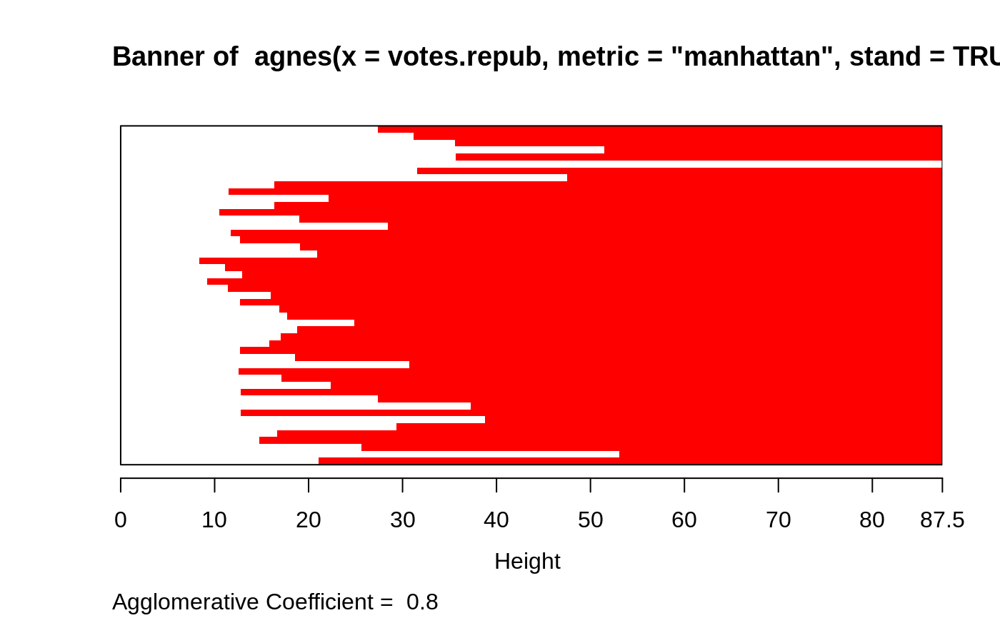
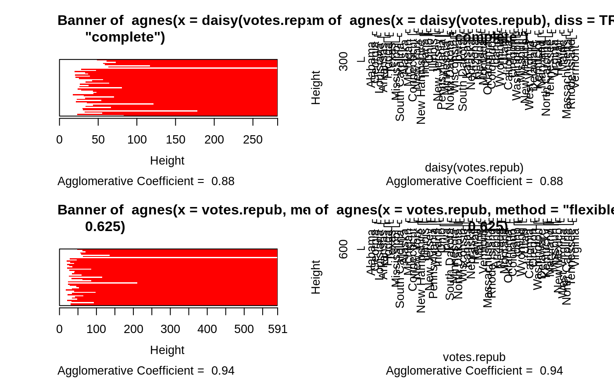
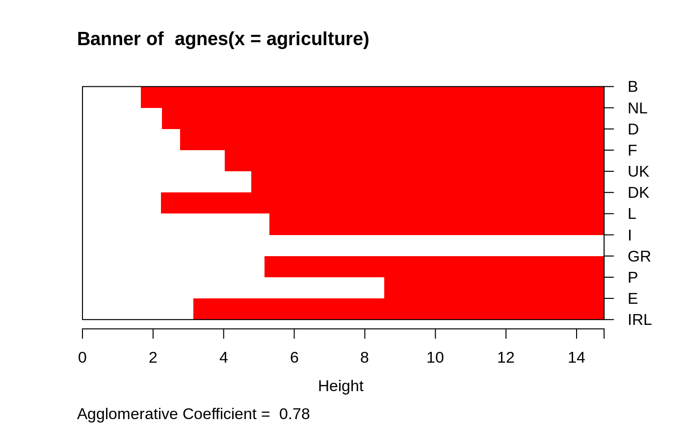

agnes.RdComputes agglomerative hierarchical clustering of the dataset.
agnes(x, diss = inherits(x, "dist"), metric = "euclidean", stand = FALSE, method = "average", par.method, keep.diss = n < 100, keep.data = !diss, trace.lev = 0)
| x | data matrix or data frame, or dissimilarity matrix, depending on the
value of the In case of a matrix or data frame, each row corresponds to an observation, and each column corresponds to a variable. All variables must be numeric. Missing values (NAs) are allowed. In case of a dissimilarity matrix, |
|---|---|
| diss | logical flag: if TRUE (default for |
| metric | character string specifying the metric to be used for calculating
dissimilarities between observations.
The currently available options are |
| stand | logical flag: if TRUE, then the measurements in |
| method | character string defining the clustering method. The six methods
implemented are
The default is |
| par.method | If |
| keep.diss, keep.data | logicals indicating if the dissimilarities
and/or input data |
| trace.lev | integer specifying a trace level for printing
diagnostics during the algorithm. Default |
an object of class "agnes" (which extends "twins")
representing the clustering. See agnes.object for
details, and methods applicable.
agnes is fully described in chapter 5 of Kaufman and Rousseeuw (1990).
Compared to other agglomerative clustering methods such as hclust,
agnes has the following features: (a) it yields the
agglomerative coefficient (see agnes.object)
which measures the amount of clustering structure found; and (b)
apart from the usual tree it also provides the banner, a novel
graphical display (see plot.agnes).
The agnes-algorithm constructs a hierarchy of clusterings.
At first, each observation is a small cluster by itself. Clusters are
merged until only one large cluster remains which contains all the
observations. At each stage the two nearest clusters are combined
to form one larger cluster.
For method="average", the distance between two clusters is the
average of the dissimilarities between the points in one cluster and the
points in the other cluster.
In method="single", we use the smallest dissimilarity between a
point in the first cluster and a point in the second cluster (nearest
neighbor method).
When method="complete", we use the largest dissimilarity
between a point in the first cluster and a point in the second cluster
(furthest neighbor method).
The method = "flexible" allows (and requires) more details:
The Lance-Williams formula specifies how dissimilarities are
computed when clusters are agglomerated (equation (32) in K&R(1990),
p.237). If clusters \(C_1\) and \(C_2\) are agglomerated into a
new cluster, the dissimilarity between their union and another
cluster \(Q\) is given by
$$
D(C_1 \cup C_2, Q) = \alpha_1 * D(C_1, Q) + \alpha_2 * D(C_2, Q) +
\beta * D(C_1,C_2) + \gamma * |D(C_1, Q) - D(C_2, Q)|,
$$
where the four coefficients \((\alpha_1, \alpha_2, \beta, \gamma)\)
are specified by the vector par.method, either directly as vector of
length 4, or (more conveniently) if par.method is of length 1,
say \(= \alpha\), par.method is extended to
give the “Flexible Strategy” (K&R(1990), p.236 f) with
Lance-Williams coefficients \((\alpha_1 = \alpha_2 = \alpha, \beta =
1 - 2\alpha, \gamma=0)\).
Also, if length(par.method) == 3, \(\gamma = 0\) is set.
Care and expertise is probably needed when using method = "flexible"
particularly for the case when par.method is specified of
longer length than one. Since cluster version 2.0, choices
leading to invalid merge structures now signal an error (from
the C code already).
The weighted average (method="weighted") is the same as
method="flexible", par.method = 0.5. Further,
method= "single" is equivalent to method="flexible", par.method = c(.5,.5,0,-.5), and
method="complete" is equivalent to method="flexible", par.method = c(.5,.5,0,+.5).
The method = "gaverage" is a generalization of "average", aka
“flexible UPGMA” method, and is (a generalization of the approach)
detailed in Belbin et al. (1992). As "flexible", it uses the
Lance-Williams formula above for dissimilarity updating, but with
\(\alpha_1\) and \(\alpha_2\) not constant, but proportional to
the sizes \(n_1\) and \(n_2\) of the clusters \(C_1\) and
\(C_2\) respectively, i.e,
$$\alpha_j = \alpha'_j \frac{n_1}{n_1+n_2},$$
where \(\alpha'_1\), \(\alpha'_2\) are determined from par.method,
either directly as \((\alpha_1, \alpha_2, \beta, \gamma)\) or
\((\alpha_1, \alpha_2, \beta)\) with \(\gamma = 0\), or (less flexibly,
but more conveniently) as follows:
Belbin et al proposed “flexible beta”, i.e. the user would only
specify \(\beta\) (as par.method), sensibly in
$$-1 \leq \beta < 1,$$
and \(\beta\) determines \(\alpha'_1\) and \(\alpha'_2\) as
$$\alpha'_j = 1 - \beta,$$ and \(\gamma = 0\).
This \(\beta\) may be specified by par.method (as length 1 vector),
and if par.method is not specified, a default value of -0.1 is used,
as Belbin et al recommend taking a \(\beta\) value around -0.1 as a general
agglomerative hierarchical clustering strategy.
Note that method = "gaverage", par.method = 0 (or par.method =
c(1,1,0,0)) is equivalent to the agnes() default method "average".
Cluster analysis divides a dataset into groups (clusters) of observations that are similar to each other.
like
agnes, diana, and mona
construct a hierarchy of clusterings, with the number of clusters
ranging from one to the number of observations.
like
pam, clara, and fanny
require that the number of clusters be given by the user.
Kaufman, L. and Rousseeuw, P.J. (1990). (=: “K&R(1990)”) Finding Groups in Data: An Introduction to Cluster Analysis. Wiley, New York.
Anja Struyf, Mia Hubert and Peter J. Rousseeuw (1996) Clustering in an Object-Oriented Environment. Journal of Statistical Software 1. doi: 10.18637/jss.v001.i04
Struyf, A., Hubert, M. and Rousseeuw, P.J. (1997). Integrating Robust Clustering Techniques in S-PLUS, Computational Statistics and Data Analysis, 26, 17--37.
Lance, G.N., and W.T. Williams (1966). A General Theory of Classifactory Sorting Strategies, I. Hierarchical Systems. Computer J. 9, 373--380.
Belbin, L., Faith, D.P. and Milligan, G.W. (1992). A Comparison of Two Approaches to Beta-Flexible Clustering. Multivariate Behavioral Research, 27, 417--433.
#> Call: agnes(x = votes.repub, metric = "manhattan", stand = TRUE) #> Agglomerative coefficient: 0.7977555 #> Order of objects: #> [1] Alabama Georgia Arkansas Louisiana Mississippi #> [6] South Carolina Alaska Vermont Arizona Montana #> [11] Nevada Colorado Idaho Wyoming Utah #> [16] California Oregon Washington Minnesota Connecticut #> [21] New York New Jersey Illinois Ohio Indiana #> [26] Michigan Pennsylvania New Hampshire Wisconsin Delaware #> [31] Kentucky Maryland Missouri New Mexico West Virginia #> [36] Iowa South Dakota North Dakota Kansas Nebraska #> [41] Maine Massachusetts Rhode Island Florida North Carolina #> [46] Tennessee Virginia Oklahoma Hawaii Texas #> Height (summary): #> Min. 1st Qu. Median Mean 3rd Qu. Max. #> 8.382 12.804 18.528 23.118 28.411 87.455 #> #> Available components: #> [1] "order" "height" "ac" "merge" "diss" "call" #> [7] "method" "order.lab" "data"plot(agn1)op <- par(mfrow=c(2,2)) agn2 <- agnes(daisy(votes.repub), diss = TRUE, method = "complete") plot(agn2) ## alpha = 0.625 ==> beta = -1/4 is "recommended" by some agnS <- agnes(votes.repub, method = "flexible", par.meth = 0.625) plot(agnS)par(op) ## "show" equivalence of three "flexible" special cases d.vr <- daisy(votes.repub) a.wgt <- agnes(d.vr, method = "weighted") a.sing <- agnes(d.vr, method = "single") a.comp <- agnes(d.vr, method = "complete") iC <- -(6:7) # not using 'call' and 'method' for comparisons stopifnot( all.equal(a.wgt [iC], agnes(d.vr, method="flexible", par.method = 0.5)[iC]) , all.equal(a.sing[iC], agnes(d.vr, method="flex", par.method= c(.5,.5,0, -.5))[iC]), all.equal(a.comp[iC], agnes(d.vr, method="flex", par.method= c(.5,.5,0, +.5))[iC])) ## Exploring the dendrogram structure (d2 <- as.dendrogram(agn2)) # two main branches#> 'dendrogram' with 2 branches and 50 members total, at height 281.9508d2[[1]] # the first branch#> 'dendrogram' with 2 branches and 8 members total, at height 116.7048d2[[2]] # the 2nd one { 8 + 42 = 50 }#> 'dendrogram' with 2 branches and 42 members total, at height 178.4119d2[[1]][[1]]# first sub-branch of branch 1 .. and shorter form#> 'dendrogram' with 2 branches and 6 members total, at height 72.92212#> [1] TRUE#> --[dendrogram w/ 2 branches and 50 members at h = 282] #> |--[dendrogram w/ 2 branches and 8 members at h = 117] #> | |--[dendrogram w/ 2 branches and 6 members at h = 72.9] #> | | |--[dendrogram w/ 2 branches and 3 members at h = 60.9] #> | | | |--[dendrogram w/ 2 branches and 2 members at h = 48.2] #> | | | | |--leaf "Alabama" #> | | | | `--leaf "Georgia" #> | | | `--leaf "Louisiana" #> | | `--[dendrogram w/ 2 branches and 3 members at h = 58.8] #> | | |--[dendrogram w/ 2 branches and 2 members at h = 56.1] #> | | | |--leaf "Arkansas" #> | | | `--leaf "Florida" #> | | `--leaf "Texas" #> | `--[dendrogram w/ 2 branches and 2 members at h = 63.1] #> | |--leaf "Mississippi" #> | `--leaf "South Carolina" #> `--[dendrogram w/ 2 branches and 42 members at h = 178] #> |--[dendrogram w/ 2 branches and 37 members at h = 121] #> | |--[dendrogram w/ 2 branches and 31 members at h = 80.5] #> | | |--[dendrogram w/ 2 branches and 17 members at h = 64.5] #> | | | |--[dendrogram w/ 2 branches and 13 members at h = 56.4] #> | | | | |--[dendrogram w/ 2 branches and 10 members at h = 47.2] #> | | | | | |--[dendrogram w/ 2 branches and 2 members at h = 28.1] #> | | | | | | |--leaf "Alaska" #> | | | | | | `--leaf "Michigan" #> | | | | | `--[dendrogram w/ 2 branches and 8 members at h = 39.2] #> | | | | | |--[dendrogram w/ 2 branches and 5 members at h = 36.8] #> | | | | | | |--[dendrogram w/ 2 branches and 3 members at h = 32.9] #> | | | | | | | |--[dendrogram w/ 2 branches and 2 members at h = 19.4] #> | | | | | | | | |--leaf "Connecticut" #> | | | | | | | | `--leaf "New York" #> | | | | | | | `--leaf "New Hampshire" #> | | | | | | `--[dendrogram w/ 2 branches and 2 members at h = 20.2] #> | | | | | | |--leaf "Indiana" #> | | | | | | `--leaf "Ohio" #> | | | | | `--[dendrogram w/ 2 branches and 3 members at h = 25.3] #> | | | | | |--[dendrogram w/ 2 branches and 2 members at h = 20.9] #> | | | | | | |--leaf "Illinois" #> | | | | | | `--leaf "New Jersey" #> | | | | | `--leaf "Pennsylvania" #> | | | | `--[dendrogram w/ 2 branches and 3 members at h = 42.2] #> | | | | |--leaf "Minnesota" #> | | | | `--[dendrogram w/ 2 branches and 2 members at h = 33.7] #> | | | | |--leaf "North Dakota" #> | | | | `--leaf "Wisconsin" #> | | | `--[dendrogram w/ 2 branches and 4 members at h = 37.5] #> | | | |--[dendrogram w/ 2 branches and 2 members at h = 26.2] #> | | | | |--leaf "Iowa" #> | | | | `--leaf "South Dakota" #> | | | `--[dendrogram w/ 2 branches and 2 members at h = 25.9] #> | | | |--leaf "Kansas" #> | | | `--leaf "Nebraska" #> | | `--[dendrogram w/ 2 branches and 14 members at h = 70.5] #> | | |--[dendrogram w/ 2 branches and 8 members at h = 48] #> | | | |--[dendrogram w/ 2 branches and 4 members at h = 43.4] #> | | | | |--[dendrogram w/ 2 branches and 3 members at h = 27.8] #> | | | | | |--[dendrogram w/ 2 branches and 2 members at h = 23.4] #> | | | | | | |--leaf "Arizona" #> | | | | | | `--leaf "Nevada" #> | | | | | `--leaf "Montana" #> | | | | `--leaf "Oklahoma" #> | | | `--[dendrogram w/ 2 branches and 4 members at h = 43.7] #> | | | |--leaf "Colorado" #> | | | `--[dendrogram w/ 2 branches and 3 members at h = 31.2] #> | | | |--[dendrogram w/ 2 branches and 2 members at h = 17.2] #> | | | | |--leaf "Idaho" #> | | | | `--leaf "Wyoming" #> | | | `--leaf "Utah" #> | | `--[dendrogram w/ 2 branches and 6 members at h = 54.3] #> | | |--[dendrogram w/ 2 branches and 3 members at h = 33.2] #> | | | |--leaf "California" #> | | | `--[dendrogram w/ 2 branches and 2 members at h = 22.2] #> | | | |--leaf "Oregon" #> | | | `--leaf "Washington" #> | | `--[dendrogram w/ 2 branches and 3 members at h = 35.1] #> | | |--[dendrogram w/ 2 branches and 2 members at h = 21.1] #> | | | |--leaf "Missouri" #> | | | `--leaf "New Mexico" #> | | `--leaf "West Virginia" #> | `--[dendrogram w/ 2 branches and 6 members at h = 66.8] #> | |--[dendrogram w/ 2 branches and 3 members at h = 43.4] #> | | |--leaf "Delaware" #> | | `--[dendrogram w/ 2 branches and 2 members at h = 33.5] #> | | |--leaf "Kentucky" #> | | `--leaf "Maryland" #> | `--[dendrogram w/ 2 branches and 3 members at h = 30.2] #> | |--[dendrogram w/ 2 branches and 2 members at h = 29.5] #> | | |--leaf "North Carolina" #> | | `--leaf "Tennessee" #> | `--leaf "Virginia" #> `--[dendrogram w/ 2 branches and 5 members at h = 83.1] #> |--[dendrogram w/ 2 branches and 4 members at h = 55.4] #> | |--[dendrogram w/ 2 branches and 2 members at h = 32.8] #> | | |--leaf "Hawaii" #> | | `--leaf "Maine" #> | `--[dendrogram w/ 2 branches and 2 members at h = 22.6] #> | |--leaf "Massachusetts" #> | `--leaf "Rhode Island" #> `--leaf "Vermont"data(agriculture) ## Plot similar to Figure 7 in ref if (FALSE) plot(agnes(agriculture), ask = TRUE) plot(agnes(agriculture))data(animals) aa.a <- agnes(animals) # default method = "average" aa.ga <- agnes(animals, method = "gaverage") op <- par(mfcol=1:2, mgp=c(1.5, 0.6, 0), mar=c(.1+ c(4,3,2,1)), cex.main=0.8) plot(aa.a, which.plot = 2) plot(aa.ga, which.plot = 2)par(op) ## equivalence stopifnot( ## below show ave == gave(0); here ave == gave(c(1,1,0,0)): all.equal(aa.a [iC], agnes(animals, method="gave", par.meth= c(1,1,0,0))[iC]), all.equal(aa.ga[iC], agnes(animals, method="gave", par.meth= -0.1)[iC]), all.equal(aa.ga[iC], agnes(animals, method="gav", par.m= c(1.1,1.1,-0.1,0))[iC])) ## Show how "gaverage" is a "generalized average": aa.ga.0 <- agnes(animals, method = "gaverage", par.method = 0) stopifnot(all.equal(aa.ga.0[iC], aa.a[iC]))